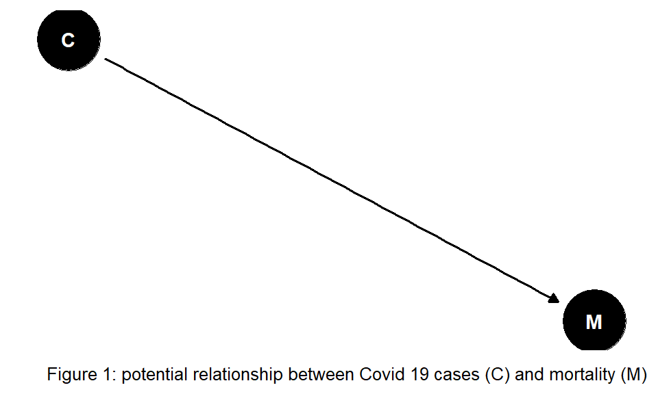
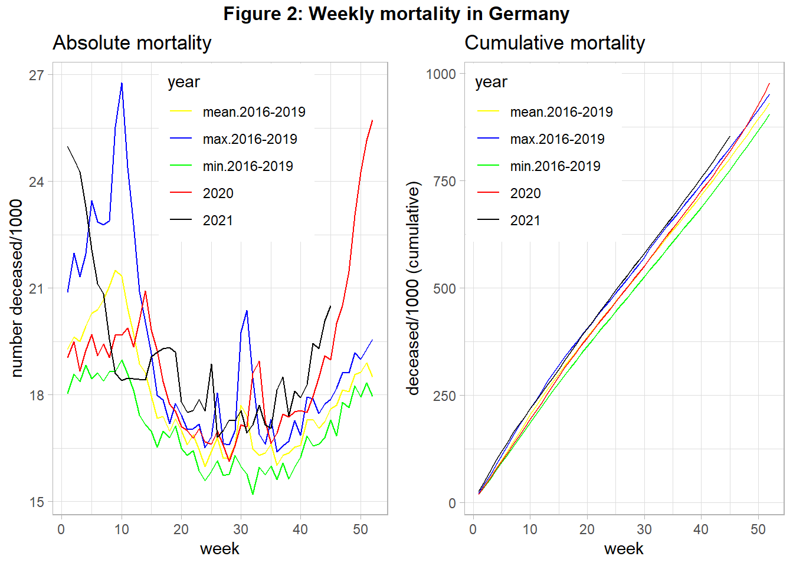
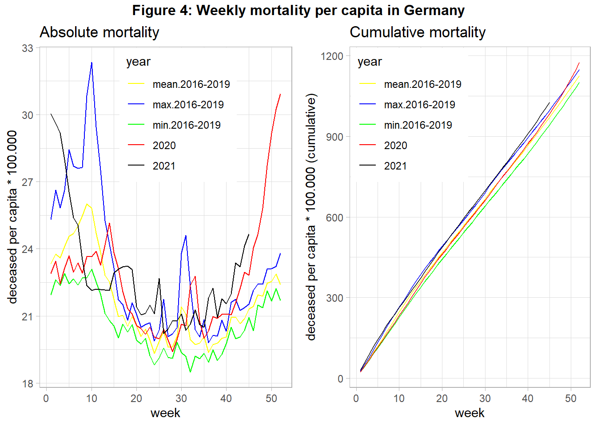
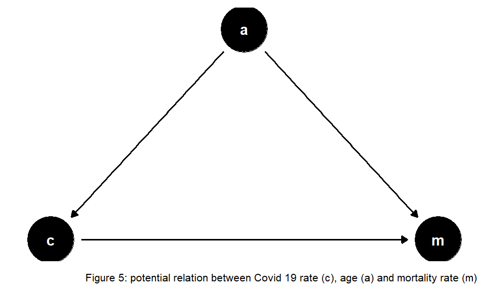

#Preliminaries:
knitr::opts_chunk$set( message=FALSE, warning=FALSE) #echo = FALSE,
rm(list=ls())
library(tidyverse)
library(gridExtra)
library(grid)
library(lubridate)
library(dagitty)
library(ggdag)
theme_set(theme_light())Since the year 2019/2020, mankind has had to deal with the communicable disease COVID-19. People across many countries and societies as a whole are affected from both an epidemiological and economic point of view. Data on mortality was regularly published across media, also to justify rigorous policy interventions. However, the numbers were rarely well explained. Hence, we close this gap by using public data from official statistics to visualize the mortality in Germany over time, also accounting for changes in population size. Following reproducible research paradigm, code is embedded within the document.
Figure 1 shows a simple relationship between total COVID-19 (C) and mortality (M) cases. If such a simple dependency holds then a comparison between the mortality in the year 2020 with mortality in preceding years may reveal the effect of COVID-19.

Figure 2 shows the mortality of year 2020 (and 2021 up to November), in contrast to the mean-, minimum-, and maximum- mortality of the 4 preceding years.
#read data
#source: https://www-genesis.destatis.de/
pop <- read_csv2("filesMortality/PopulationGermany.csv")
#source: https://www.destatis.de/DE/Themen/Gesellschaft-Umwelt/Bevoelkerung/Sterbefaelle-Lebenserwartung/Tabellen/sonderauswertung-sterbefaelle.html?nn=209016
deaths <- read_csv2("filesMortality/sonderauswertung_sterbefaelle_Tage_26Nov2021.csv")
pop_year <- pop %>%
#gather(`31.12.2015`, `31.12.2016`,`31.12.2017`,`31.12.2018`,`31.12.2019`,
# key="end_of_year", value=population) %>%
mutate(year=as.integer(substr(Datum,5,8))+1) %>% #Population is taken as reference for following year
#group_by(Jahr) %>%
rename(population=Anzahl) %>%
select(year, population)
deaths_tab <- deaths %>%
#filter(Jahr<2021) %>%
gather(`01.01.`:`31.12.`,
key=day_month, value=deaths) %>%
mutate(day=dmy(paste0(day_month, Jahr)), deaths=as.integer(str_replace(deaths, " ", ""))) %>%
rename(year=Jahr) %>%
select(year, day,deaths) %>%
drop_na(deaths)
#plot 1 absolute and 2 relative mortality (per capita)
#calculate number of deaths across time:
pop_death_time <- deaths_tab %>%
group_by(year, week=week(day)) %>%
summarise(deaths=sum(deaths), days_in_week=n_distinct(day)) %>%
filter(days_in_week==7) %>%
group_by(year) %>%
arrange(week) %>%
mutate(deaths_cum=cumsum(deaths)) %>%
arrange(year, week) %>%
inner_join(pop_year, by="year") %>% ##add population data
mutate(deaths_rel=deaths/population, deaths_cum_rel=deaths_cum/population)
#subset data with year>=2020:
pop_death_time_2020 <- pop_death_time %>%
filter(year>=2020) %>%
select(year, week, deaths, deaths_cum, deaths_rel, deaths_cum_rel) %>%
mutate(year=as.character(year))
#subset time before 2020: min, mean, max death values (absolute and cumulative), same format as in pop_death_time_2020
pop_death_time_base <- pop_death_time %>%
filter(year<2020) %>%
group_by(week) %>%
summarise(mean_deaths=mean(deaths), min_deaths=min(deaths), max_deaths=max(deaths), mean_deaths_cum=mean(deaths_cum), min_deaths_cum=min(deaths_cum), max_deaths_cum=max(deaths_cum), mean_deaths_rel=mean(deaths_rel), min_deaths_rel=min(deaths_rel), max_deaths_rel=max(deaths_rel),
mean_deaths_cum_rel=mean(deaths_cum_rel), min_deaths_cum_rel=min(deaths_cum_rel), max_deaths_cum_rel=max(deaths_cum_rel)) %>%
gather(`min_deaths`, `max_deaths`, `mean_deaths`, `min_deaths_cum`, `max_deaths_cum`, `mean_deaths_cum`,
`min_deaths_rel`, `max_deaths_rel`, `mean_deaths_rel`, `min_deaths_cum_rel`, `max_deaths_cum_rel`, `mean_deaths_cum_rel`,
key="compare", value="death") %>%
separate(compare, sep="_deaths", into=c("year", "outcome")) %>%
mutate(outcome=ifelse(outcome=="", "abs", outcome)) %>%
spread(outcome, death) %>%
rename(deaths=abs, deaths_cum=`_cum`, deaths_rel=`_rel`, deaths_cum_rel=`_cum_rel`) %>%
relocate(year)
#data set containing information on >=2020,min,max,mean-mortality, both absolute and relative to population size
pop_death_time_comp <- pop_death_time_2020 %>%
bind_rows(pop_death_time_base) %>%
mutate(year=as_factor(case_when(year %in% c('2020', "2021") ~ year,
year=='max' ~ "max.2016-2019",
year=='min' ~ "min.2016-2019",
year=='mean' ~ "mean.2016-2019")), year=fct_relevel(year, "mean.2016-2019", "max.2016-2019", "min.2016-2019"))
#plot total deaths over time:
col <- c( "2020"="red", "2021"="black", "max.2016-2019"="blue", "mean.2016-2019"="yellow", "min.2016-2019"="green")
#1 plot absolute mortality
p1 <- pop_death_time_comp %>%
ggplot(aes(x=week, y=deaths/1000, group=year, color=year)) +
geom_line() +
scale_color_manual(values=col) +
labs(title = "Absolute mortality", y="number deceased/1000") +
theme(legend.position = c(0.55, 0.8))
#plot cumulative absolute mortality:
p2 <- pop_death_time_comp %>%
ggplot(aes(x=week, y=deaths_cum/1000, group=year, color=year)) +
geom_line() +
scale_color_manual(values=col) +
labs(title = "Cumulative mortality", y="deceased/1000 (cumulative)") +
theme(legend.position = c(0.25, 0.8))
#combine 2 plots next to each other
title1=textGrob("Figure 2: Weekly mortality in Germany", gp=gpar(fontface="bold"))
grid.arrange(p1, p2, ncol=2, top=title1) 
When interpreting this figure we have to acknowledge that in 2018 there was very high mortality due to a very severe influenza season in the first quarter. We see in 2020 three peaks of relatively high mortality in week 15, around week 32, and from week 42 onward. The first and the last peak was correlated with strong policy interventions (“lockdown”). We also see that the cumulative mortality in 2020 was relatively high, at the end of the year even the maximum mortality of year 2018 was surpassed. For year 2021 the mortality remains high, with an increasing tendency from the middle of the year onward.
However, these total numbers can provide wrong evidence about the mortality, if the population changes over the years: If the population number (P) increases we would expect that more people die (see Figure 3), also in absence of COVID-19.
Hence, we have to account for changes in population size. Figure 4 shows the data from above but uses the population at the beginning of each year to calculate the number of deceased per capita.
#2 Calculate Mortality per capita (population at the beginning of year):
#plot absolute mortality per capita:
p3 <- pop_death_time_comp %>%
ggplot(aes(x=week, y=deaths_rel*100000, group=year, color=year)) +
geom_line() +
scale_color_manual(values=col) +
labs(title = "Absolute mortality", y="deceased per capita * 100.000") +
theme(legend.position = c(0.55, 0.8))
#plot cumulative mortality per capita:
p4 <- pop_death_time_comp %>%
ggplot(aes(x=week, y=deaths_cum_rel*100000, group=year, color=year)) +
geom_line() +
scale_color_manual(values=col) +
labs(title = "Cumulative mortality", y="deceased per capita * 100.000 (cumulative)") +
theme(legend.position = c(0.25, 0.8))
#combine 2 plots next to each other
title2=textGrob("Figure 4: Weekly mortality per capita in Germany" , gp=gpar(fontface="bold"))
grid.arrange(p3, p4, ncol=2, top=title2)
We find that changes in the number of citizens did not alter the found pattern from above. At the end of 2020 overall mortality increased strongly, probably driven by COVID-19. The same holds for the year 2021, although this data is still preliminary at the time of data analysis. However, other potentially relevant variables are not included in the analysis. If the relationship between COVID-19 cases and mortality is confounded by the important variable age (see Figure 5) we need to account for changes in the age structure over the years in our analysis, as suggested in Figure 5:

Ragnitz (2022) emphasizes the role of ageing that needs to be accounted for when comparing expected mortality with actual mortality – otherwise ‘excess mortality’ would be overestimated. Contemporary literature discusses the size of COVID-19-associated excess mortality in Germany. Stang et al. (2020) find increased mortality for most age groups 60+ during the first wave of COVID-19. De Nicola, Kauermann, and Höhle (2022) analyze age-specific mortality during the year 2020. They distinguish between weekly and yearly mortality and also compare different methods. The authors find overall excess mortality was about 1 percent in 2020, mainly driven by fatalities in higher age groups at the end of the year. Another interesting enterprise is to consider further potential missing variables that might bias estimates of the COVID-19 impact on mortality. The findings of Wollschläger et al. (2022) indicate excess mortality as well, after adjusting for air temperature, seasonal influenza activity, and socioeconomic deprivation as additional risk factors.
So far, international comparisons suggest that some countries were more severely hit by the COVID-19 pandemic than others. The future may tell whether this was due to different policies, and which other factors played an important role.
Take care and stay healthy! :)